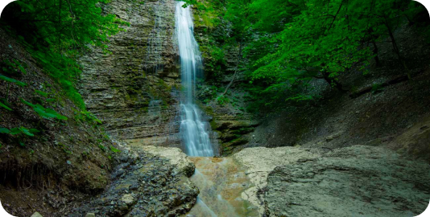
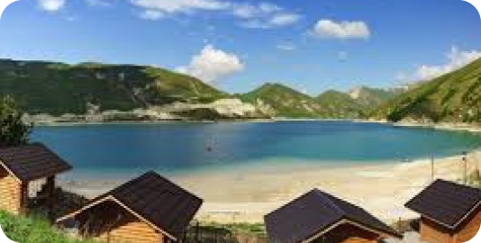
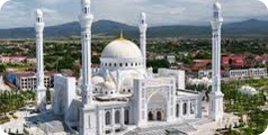
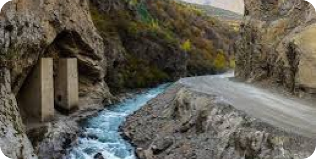
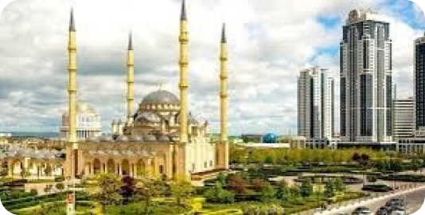
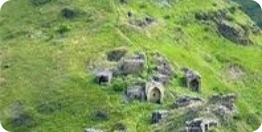

Театры
Выставки
Мероприятия
Достопримечательности
Отели
Грозный

Нихалоевские водопады
расположены на правом притоке реки Чанти-Аргун
вблизи селения Нихалой и представляют собой каскад
из нескольких водопадов.

Казеной-ам
завальное озеро на границе Веденского района
Чеченской Республики и Ботлихского района Дагестана

Мечеть “Гордость Мусульман”
Мечеть «Гордость мусульман» имени пророка
Мухаммеда — построенная в XXI веке в центре
Шали мечеть.

Аргунское ущелье
одно из крупнейших по протяженности ущелий Кавказа.

Богато украшенная старинная мечеть
старинная мечеть в османском стиле, вмещающая 10
000 человек во время молитвы.

Цой-Педе, «город мёртвых»
Один из крупнейших средневековых некрополей на
Кавказе. Может посетить каждый.